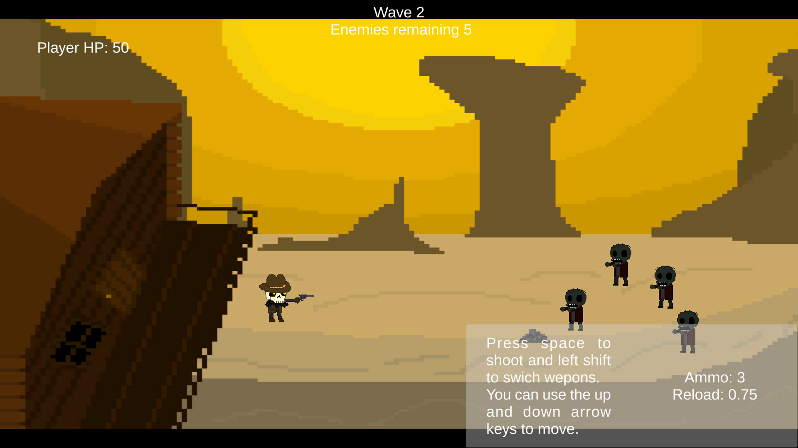

Here is my first game Dead Eye! I made this in a program named Urban Arts Game Academy through their summer intensive in 2025, a 6 week program where me and many others learnt the basics of making 2D video games using Unity. This was my first attempt of making a actual game, and I had to create it in 1 week using the skills I learnt the 4 weeks before it. While it sadly got bugged and I could get my unity file back, this was a good first experience in building a game solo and i'm proud I was even able to make a game.
During the 6 weeks I was there, I learnt many skills that I still use today. I learnt how to use Unity to build a game, C#, make pixel art, make sound effects, and write my own narrative for a game. I was able to go though the whole proccess of learning these skills for 4 weeks, and put those skills to use in the last 2 weeks to make my own gamne, and a game with a team while helped me to better understand how to work in a team on others and manage task efficently in a short span of time, both the solo and team project being one week each.
I got to learn a few things through the limited time we had to make these games, mainly being that not all your ideas will always make it into the game. Originaly for this game there were also supposed to be human enemies but I didn't have enough time to make them, though I did of a concept of cowboy enemy that shoots the player. Also it wasn't just enemies that were cut, I also made a few animated assets for my game I never got to add in, not because of time contraintes, but because I didn't know how to actually add in the animations, I still have all the original sprite work for the game on which includes animations for the player, zombies, and even the map where the sun sets throughout the level.
You can check out this project here.
